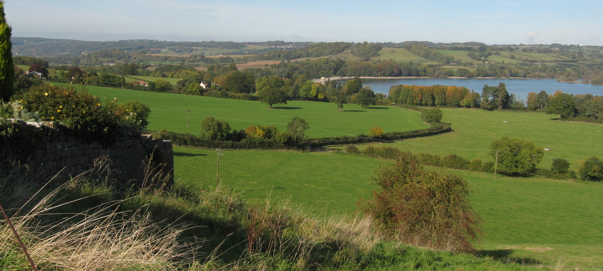
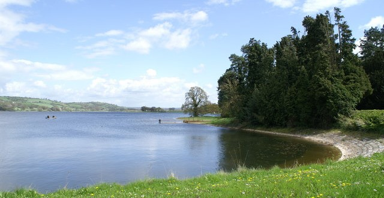

Somerset Trails
Staple Hill
Cheddar Gorge
Blagdon Lake
Somerset Coastal Path
Exmoor National park
☰
Explore the best trails one step at a time
Explore Blagdon Lake below:
1 / 3

2 / 3

3 / 3
Blagdon Lake Map
Explore our trails
Explore
Home
Staple Hill
Cheddar Gorge
West Somerset Coastal Path
Exmoor National Park
☰
Top